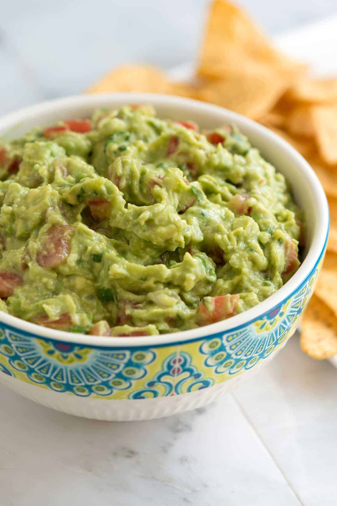

Guacamole

Description
Guacamole is perfect served next to a big bowl of tortilla
chips or with your favorite fajitas or tacos. This recipe is
quick, simple, and fresh.
Ingredients
- 3 ripe medium avocados
- 1/4 cup finely chopped onion
- 1.5 tablespoons fresh lime juice
- 1/4 cup cilantro leaves and tender stems, chopped
- 1 large plum or Roma tomato, chopped, optional
- 1/2 teaspoon salt, or more to taste
- 1/4 to 1/2 teaspoon ground cumin, optional
- 1 to 2 teaspoons finely chopped jalapeño pepper, with seeds
and membrane removed, optional
Steps
- Add the chopped onion to a small bowl and cover with cold
water. Set aside for 5 minutes, drain, and then rinse. This
simple step tones down the raw flavor of the onions.
- Cut avocados in half lengthwise, remove the pit, scoop out
the flesh, and add to a bowl.
- Use a fork to mash the avocado into a chunky dip.
- Stir in the drained and rinsed onions, lime juice,
cilantro, tomato, and salt. If you are adding them, add the
finely chopped jalapeño and cumin.
- Taste the guacamole and adjust with more salt or lime
juice.
- Guacamole is best when eaten soon after making it, but to
store it, press plastic wrap down onto the guacamole and
refrigerate for up to one day.
References